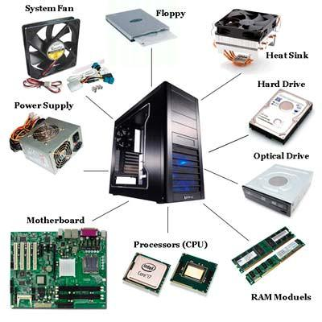

Limpieza de PC
Mantén tu PC libre de polvo, residuos y archivos innecesarios. Una limpieza regular prolonga su vida útil y evita sobrecalentamientos. Añade toques finales como limpiar el teclado, la pantalla y optimizar el disco duro para un rendimiento excepcional. Una PC limpia no solo funciona mejor, también da una experiencia más cómoda y agradable al usuario.
Mantenimiento Preventivo
Aprende a adelantarte a los problemas. Con un mantenimiento preventivo adecuado, podrás detectar piezas desgastadas, actualizar componentes clave y mantener tu sistema operativo al día. Así evitarás fallas repentinas, mejorarás la eficiencia energética y maximizarás el rendimiento a largo plazo. Un mantenimiento constante se traduce en menos tiempo de inactividad y mayor productividad.
Conceptos Básicos
Conocer a fondo cada uno de los componentes y el software te permitirá entender por qué tu PC se comporta de cierta manera. Esta información es clave para tomar decisiones sobre mejoras, actualizaciones y soluciones a problemas.
CPU (Unidad Central de Procesamiento): El “cerebro” del ordenador. Ejecuta instrucciones y procesa datos. A mayor velocidad y núcleos, mejor rendimiento.
RAM (Memoria de Acceso Aleatorio): Memoria temporal donde se almacenan datos de programas en uso. Más RAM permite un mejor desempeño multitarea.
HDD/SSD (Almacenamiento): El HDD (Disco Duro) y el SSD (Unidad de Estado Sólido) guardan tus archivos y el sistema operativo. Un SSD es más rápido, silencioso y consume menos energía que un HDD.
GPU (Unidad de Procesamiento Gráfico): Especializada en renderizar gráficos y video. Es esencial para videojuegos, diseño 3D y tareas con alta carga visual.
Tarjeta Madre (Motherboard): La placa principal que conecta todos los componentes. Determina qué hardware puedes instalar y cómo interactúan entre sí.
PSU (Fuente de Poder): Suministra la energía a todos los componentes. Una PSU de calidad y potencia adecuada es vital para la estabilidad del sistema.
Sistema Operativo: El software que administra recursos, proporciona una interfaz y ejecuta las aplicaciones (ej. Windows, Linux, macOS). Mantenerlo actualizado asegura compatibilidad y seguridad.
Controladores (Drivers): Programas que permiten que el sistema operativo se comunique con el hardware. Actualizarlos mejora el rendimiento y la estabilidad.
Software de Limpieza y Optimización: Herramientas para eliminar archivos basura, desfragmentar discos y optimizar el arranque. Ayuda a mantener el sistema ágil y ordenado.
Beneficios del Mantenimiento
Un mantenimiento adecuado prolonga la vida del equipo, mejora la velocidad en tareas cotidianas, reduce el riesgo de fallas críticas, disminuye el ruido y el calor generado, y promueve un consumo energético más eficiente. En pocas palabras, obtienes una PC más confiable, rápida y lista para enfrentar cualquier desafío tecnológico.


Recursos Adicionales
Para profundizar más en el mantenimiento y la optimización de tu PC, consulta la siguiente guía detallada:
Contacto
¿Tienes preguntas, comentarios o sugerencias? Envíanos un mensaje y nuestro equipo estará encantado de ayudarte. No dudes en compartir tus experiencias, problemas específicos o recomendaciones. ¡Tu retroalimentación nos ayuda a mejorar!